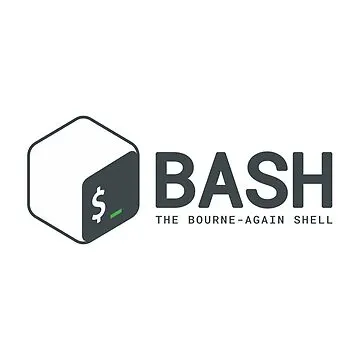
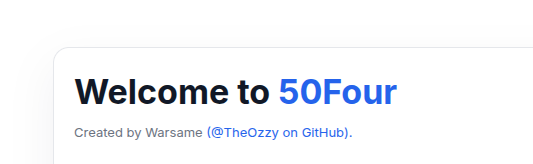

Projects
A snapshot of the platform, DevOps, and automation work I’ve completed so far, along with experiments that are currently in progress.
Completed Projects
OverTheWire: Bandit (0–20)
Progressive Linux wargame focused on SSH, permissions, file handling, and basic shell tooling to strengthen command-line fundamentals.
Stack: Linux, SSH, Bash

Bash Automation Scripts
Growing library of Bash utilities for automating repetitive server tasks such as backups, log housekeeping, and environment bootstrap.
Stack: Bash, Linux

Fiftyfour – Nginx + EC2 + Route53
Personal infrastructure lab deploying an Nginx-backed site on AWS EC2 with DNS managed via Route53 and room for future automation.
Stack: Nginx, AWS EC2, Route53
In-Progress Projects
SadServers: Level [EASY]
Troubleshooting exercises on misconfigured Linux servers, practising real-world debugging, log inspection, and quick fixes under time pressure.
Stack: Linux, Bash, troubleshooting